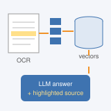
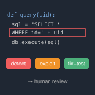
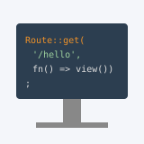

I'm an engineer working on LLM systems, with an MSc in Cybersecurity. I like building language-model systems that people can actually rely on, and taking them from a first prototype to something that is used and evaluated. So far that has meant retrieval-augmented generation over scanned documents, multi-agent pipelines that find and fix security vulnerabilities, and LLMs that extend static analysis tools.
I work at the University of Southern Denmark (SDU) in Sønderborg, where I am in charge of the LLM development of a retrieval-augmented, human-in-the-loop document system: it reads scanned documents, answers questions about them, and shows the exact source passages behind every answer so that people can check it. Before that, as a research assistant at SDU, I co-developed an agentic vulnerability-detection system with two software companies, Umbraco and Unik. I also teach the exercise sessions of the bachelor course in Web Development. I received my MSc in Cybersecurity from Politecnico di Torino in 2026, after writing my Master's thesis at SDU as an exchange student, and my BSc in Computer Engineering from the same university.
My research interests are in LLMs, agents and retrieval-augmented generation, and in how to make them trustworthy. I want to understand how to evaluate, verify and monitor what LLM agents do, and how to build the benchmarks and methods that make their failures measurable. I bring a security perspective to these questions, both in using LLMs to find vulnerabilities and in asking where the LLM systems themselves can fail. I am also interested in LLMs for mental health, a setting where reliable, grounded and safe answers matter most.
Graduated with an MSc in Cybersecurity from Politecnico di Torino.
Jan 2026
Began as Research Assistant at SDU, building an agentic vulnerability-detection system with Umbraco and Unik.
2025
Moved to Sønderborg, Denmark, as an exchange student to write my Master's thesis at SDU.
Projects
Selected projects and papers. My main project is highlighted.

Retrieval-Augmented, Human-in-the-Loop Document Assistant
LLM Developer, University of Southern Denmark (internal project)
Jul 2026–present
A RAG pipeline that helps university employees with a document-based process. Scanned documents go through OCR (PaddleOCR) into structured JSON. They are then split into chunks, using a different method for tables and for paragraphs, and stored as embeddings in a vector database. An LLM answers each query from the retrieved passages, and an interface lets users review each answer with its source passages highlighted in the original scan.
Argues that the decision to deploy an AI system should rest on scoped, independently checkable verification and on monitoring after deployment, not on mechanistic explanation alone. Proposes a reportable Verification Coverage metric.

Agentic Vulnerability Detection with Industry Partners
Research Assistant, University of Southern Denmark — with Umbraco and Unik
Jan–Jun 2026
An AI system in which LLM agents find a vulnerability in source code, explain how it could be exploited and propose a fix. The fix is tested automatically before a person reviews it. Evaluated on a public benchmark and on real open-source and production code, the system uncovered a likely exploitable flaw in an open-source library. The evaluation also showed how public vulnerability labels can mislead benchmark scores.
A three-agent LangGraph pipeline (Analyzer, Suggestor, Creator) checks CodeQL results, finds gaps in its rules and drafts new CodeQL queries. On 26 real-world Python files from CVEfixes (CWE-78, CWE-79, CWE-89), the Analyzer found the correct vulnerability in far more files than CodeQL alone. GPT-5.2 and GPT-4o-mini were compared under identical settings, with an LLM-as-a-judge protocol for the proposed rules.
Teaching & More

Teaching Assistant, Web Development, University of Southern Denmark, Jul 2026–present
Bachelor-level course. I lead the exercise sessions, working through PHP and Laravel exercises with students.
Private Tutor, Turin, 2020–2024
Physics, mathematics, chemistry and computer science for middle and high school students.
Skills
LLMs & agents: LangChain, LangGraph, single- and multi-agent design, closed and open-source models (GPT, Claude, DeepSeek, Qwen), RAG architectures, prompt engineering
ML: PyTorch
Security: static analysis (CodeQL), vulnerability detection
Programming: Python, Java, C, C++, PHP (Laravel), Linux
Languages: Italian (native), English (C1)